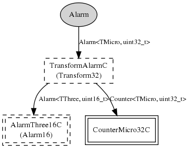

32-bit microsecond Alarm component as per TEP102 HAL guidelines. The mica family microsecond Alarm is built on hardware timer 3, and actually runs at CPU frequency / 8. You can use the MeasureClockC.cyclesPerJiffy() command to figure out the exact frequency, or the MeasureClockC.calibrateMicro() command to convert a number of microseconds to the near-microsecond units used by this component.
Upto three of these alarms can be created (one per hardware compare register). Note that creating one of these Alarms consumes a 16-bit microsecond Alarm (see AlarmMicro16C).
